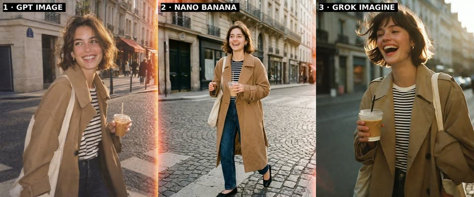

Disposable-camera Paris off-duty look (GPT Image vs Nano Banana vs Grok Imagine): camel trench, Breton stripes, straight dark denim, ballet flats

A street-style wardrobe prompt that reads like a stylist's call sheet: one outfit line ("Oversized camel trench coat over a striped Breton top, straight dark denim, black ballet flats, small gold hoops"), one prop pair (iced coffee, canvas tote), then the camera treatment: point-and-shoot disposable with on-camera flash fill, half-body framing, faded film colours with a light leak. The texture line goes down to fabric ("wool coat weave, cotton stripe texture"), and the avoid list ends with "real celebrity likeness, real logos." The creator's 3-up compares GPT Image (light leak, freckles), Nano Banana (full outfit visible, flats included) and Grok Imagine (big candid laugh).
Prompt
Candid disposable film camera street photo of a fictional 25-year-old Parisian model off-duty, soft oval face with natural asymmetry, bright hazel eyes with catchlights, natural brows, minimal makeup with a slight glow, messy chestnut bob with fine flyaway strands. She walks across a cobblestone street in the Marais at golden hour, laughing at something off camera, an iced coffee in one hand and a canvas tote on her shoulder, glancing just past the lens. Oversized camel trench coat over a striped Breton top, straight dark denim, black ballet flats, small gold hoops. Shot on a point-and-shoot disposable camera with on-camera flash fill, half-body framing at eye level, subject slightly left of center, Haussmann facades softly blurred behind her. Warm low sun from the right, slightly faded film colors with visible grain and a light leak at the edge. Authentic skin texture with visible fine pores and faint peach fuzz, natural shine on the nose, wool coat weave, cotton stripe texture. Vertical 4:5 composition. Avoid: plastic or airbrushed skin, doll face, over-smoothed texture, poreless skin, beauty filter, 3D render or CGI look, distorted facial features, extra fingers, warped hands, gibberish text, real celebrity likeness, real logos.
Our Seedance 2.5 adaptation
[ADAPTED for Seedance 2.5 by Grok Bot; not the creator's prompt. Follows the official BytePlus Seedance 2.5 prompt guide and its official sd25-pe prompt-optimizer skill: parameters only on the API line (not in the prompt body), subject + action + scene, then visuals, camera (move, subject, start, direction, arrival) and sound; only the source's own exclusions are kept.] API: duration 8, ratio 9:16, resolution 1080p, generate_audio true. 【Subject】A fictional 25-year-old woman with a messy chestnut bob, hazel eyes and minimal makeup, wearing an oversized camel trench coat over a striped Breton top, straight dark denim, black ballet flats and small gold hoops; an iced coffee in one hand and a canvas tote on her shoulder. 【Action】She walks across a cobblestone street at golden hour, laughs at something off camera and glances just past the lens; the trench coat swings with each step. 【Camera】Half-body framing at eye level, walking backward in front of her at her pace, subject slightly left of centre; Haussmann-style facades softly blurred behind. 【Visuals】Point-and-shoot disposable-camera look with on-camera flash fill and warm low sun from the right, slightly faded film colours, visible grain and a light leak at the frame edge; authentic skin texture, wool weave and cotton stripe texture. No real logos. 【Sound】Street ambience, footsteps on cobblestones, distant scooter, her laugh.
Tags: Parisian off-duty, camel trench, Breton stripe top, ballet flats, disposable camera, flash fill, light leak, fabric texture, model comparison, 4:5